NOW
Washington
1789-1797

Monroe
1817-1825
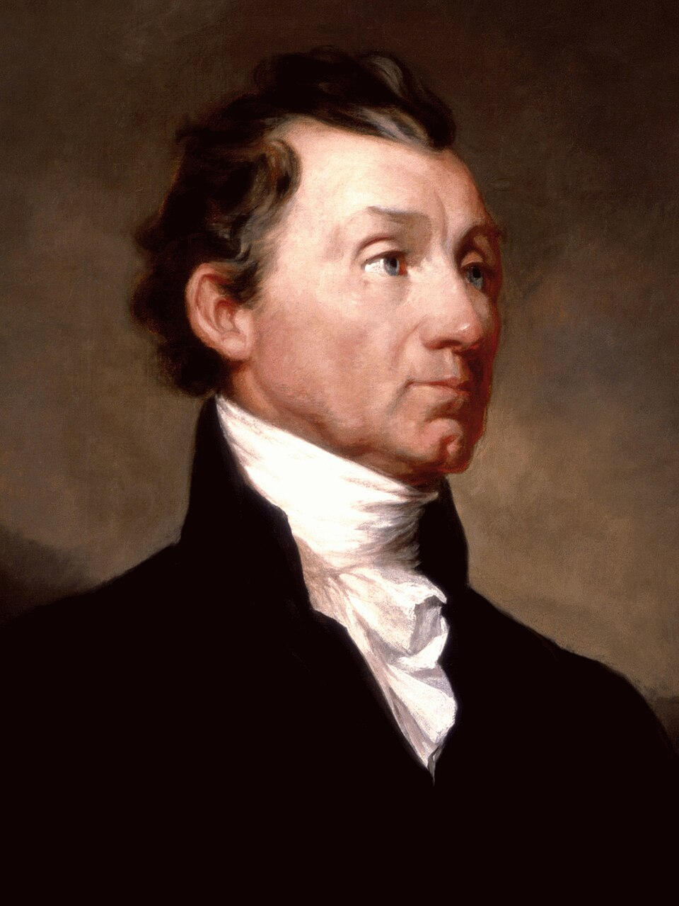
J.Q. Adams
1825-1829

Jackson
1829-1837
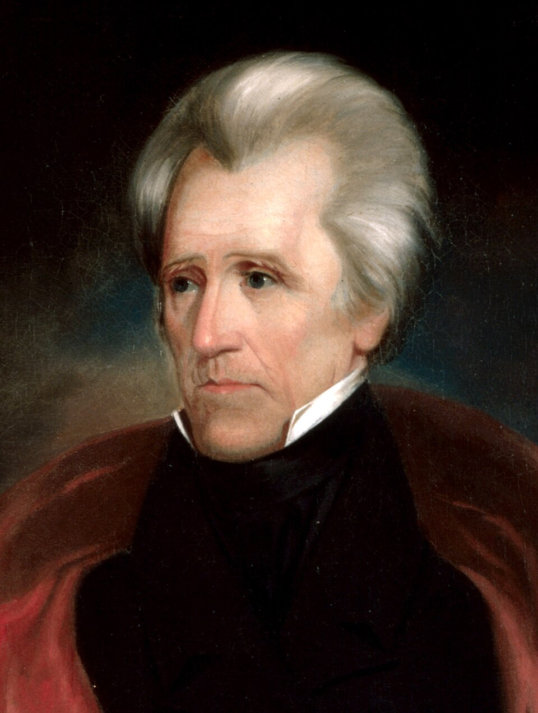
Van Buren
1837-1841

W.H. Harrison
1841
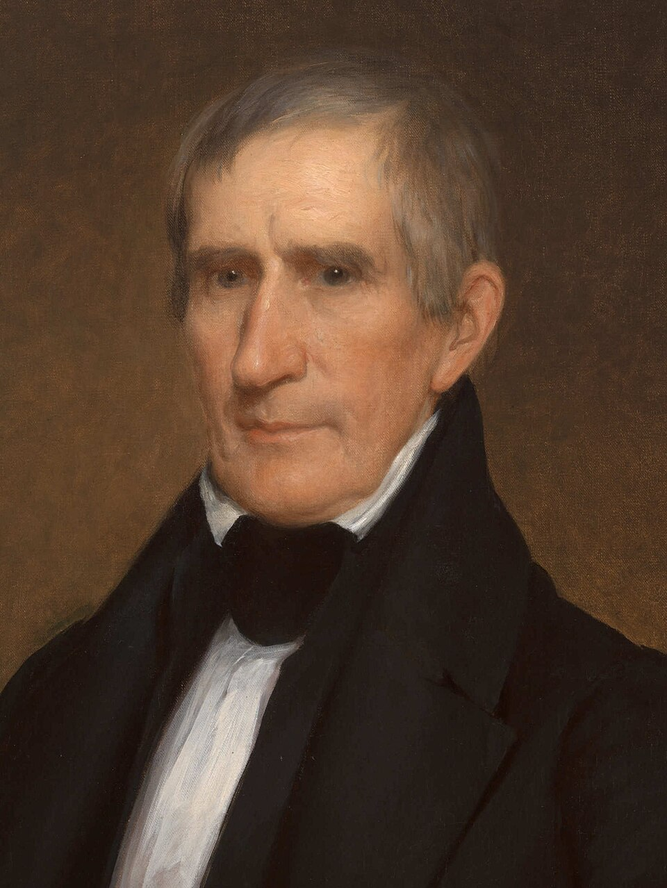
Tyler
1841-1845
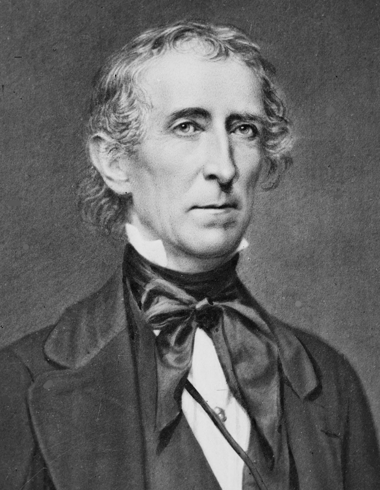
Polk
1845-1849

Taylor
1849-1850

Fillmore
1850-1853
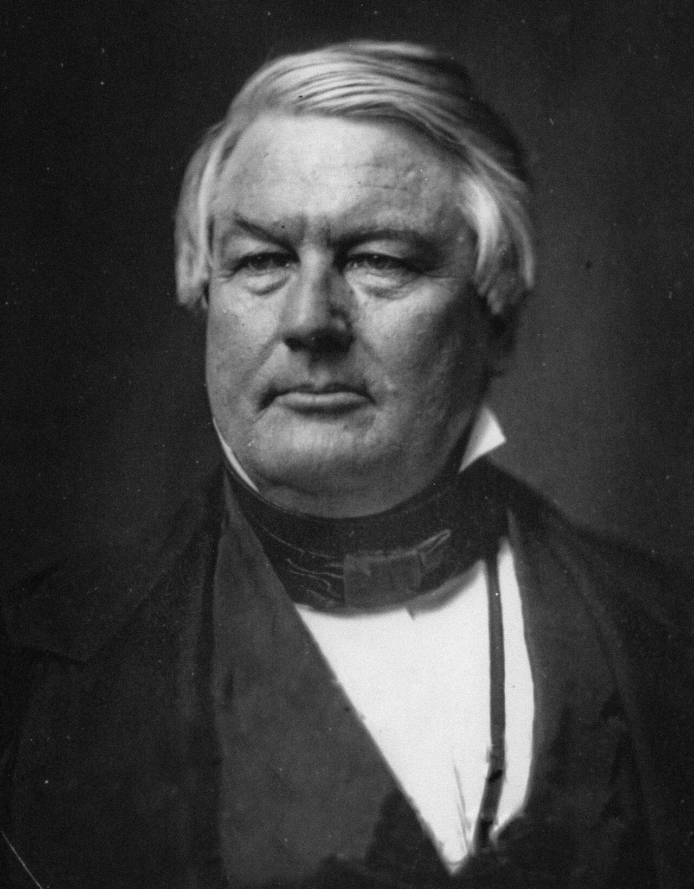
Pierce
1853-1857
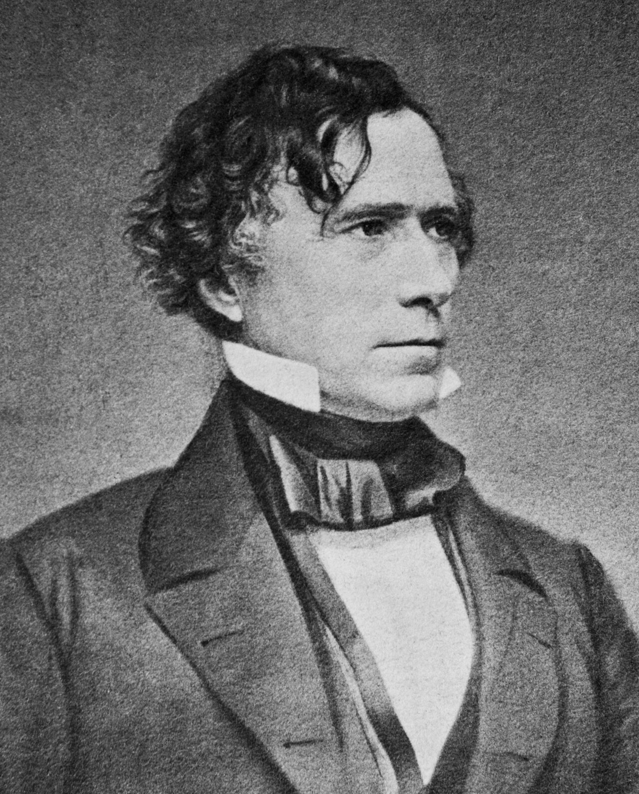
Buchanan
1857-1861
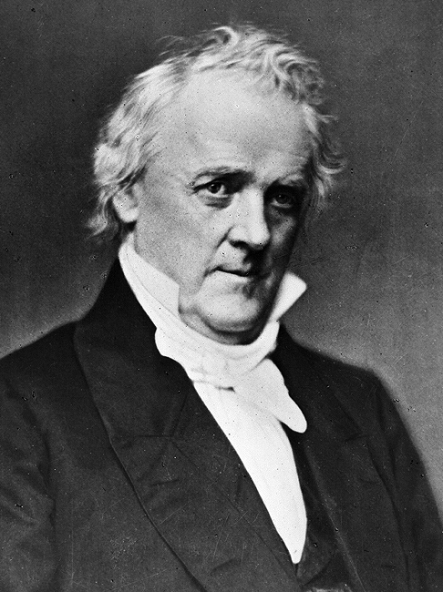
Lincoln
1861-1865
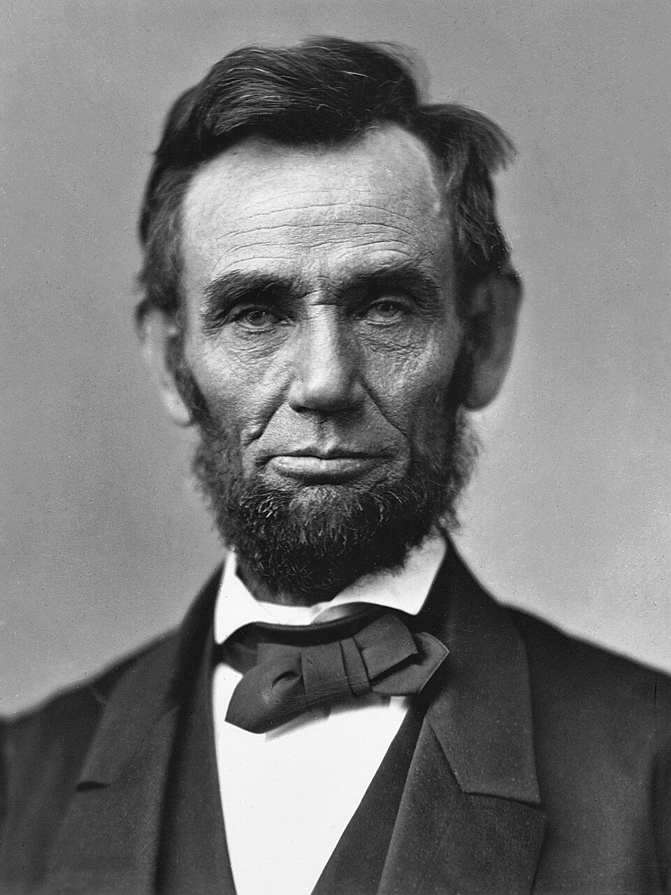
Johnson
1865-1869

Grant
1869-1877

Hayes
1877-1881
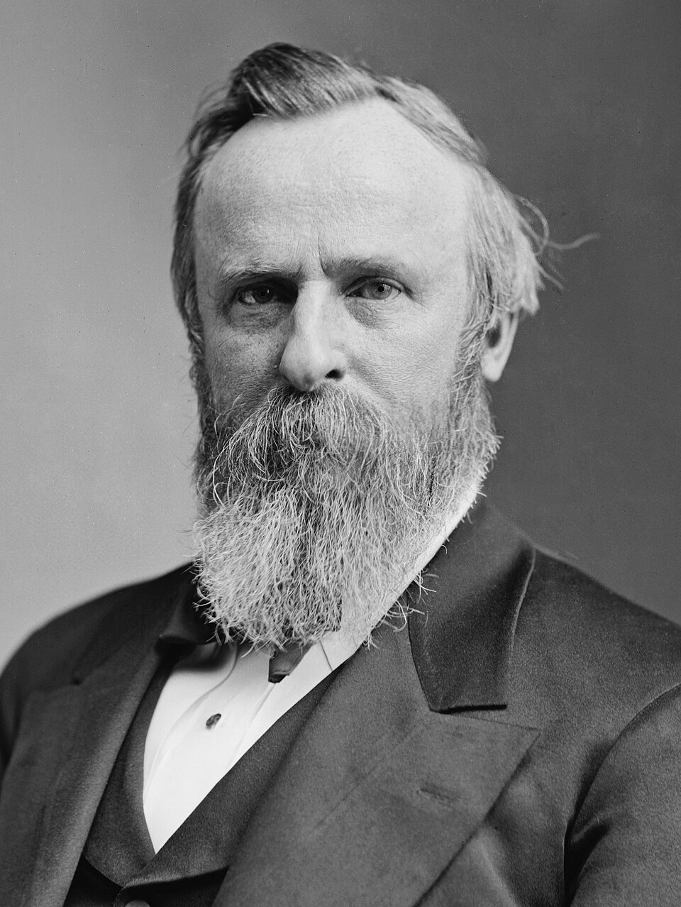
Garfield
1881

Arthur
1881-1885
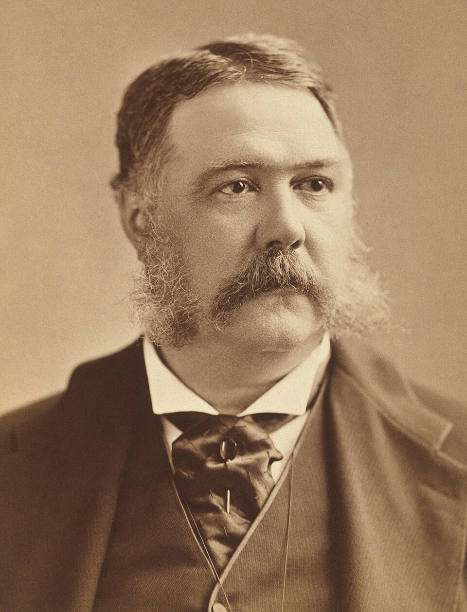
Cleveland
1885-1889

Harrison
1889-1893

Cleveland
1893-1897

McKinley
1897-1901

Roosevelt
1901-1909
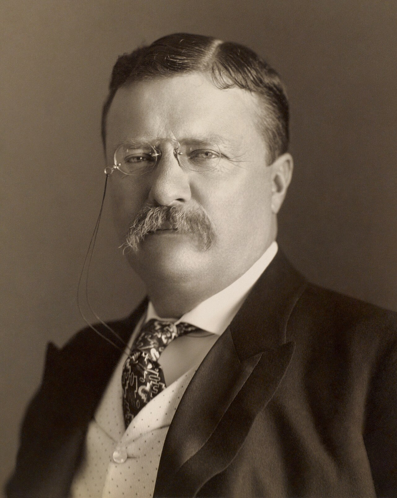
Taft
1909-1913
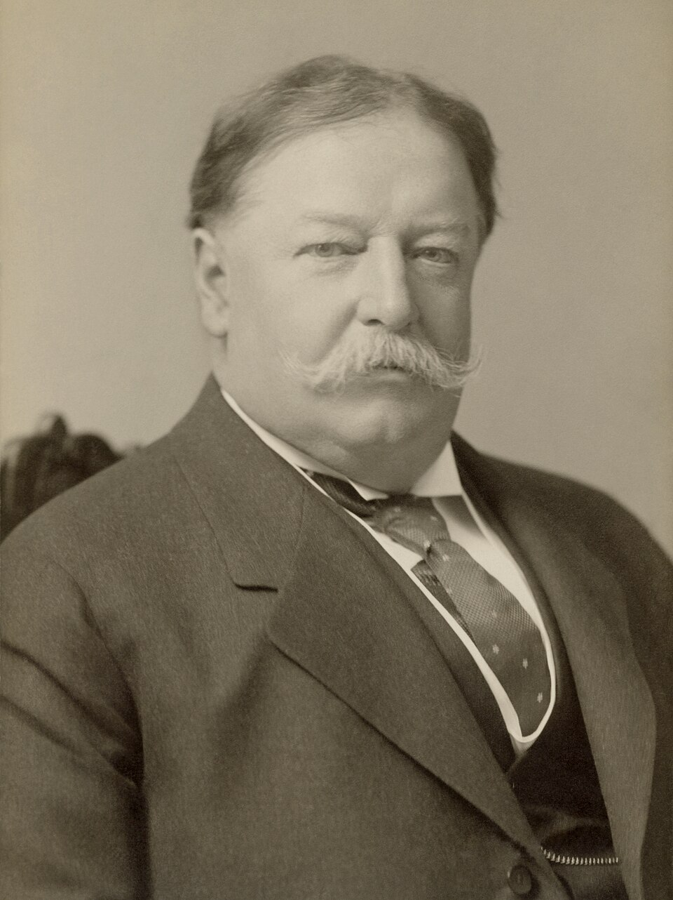
Wilson
1913-1921

Harding
1921-1923

Coolidge
1923-1929
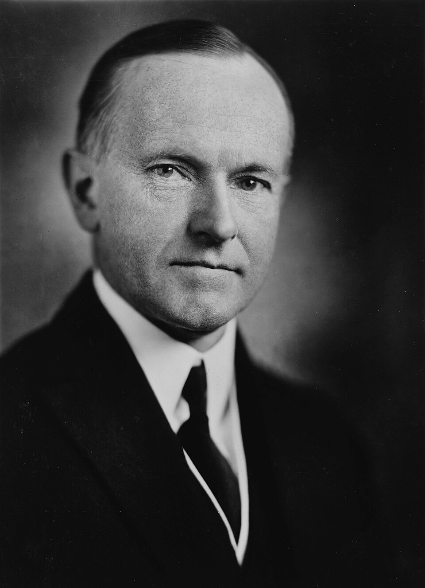
Hoover
1929-1933
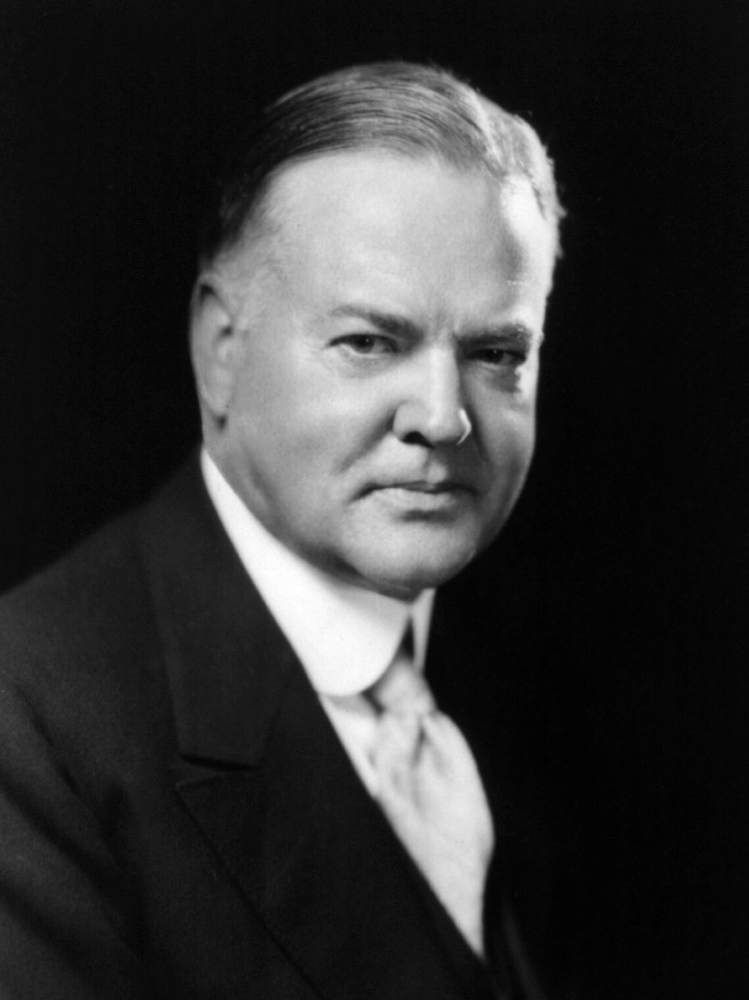
FDR
1933-1945

Truman
1945-1953

Eisenhower
1953-1961

Kennedy
1961-1963

Johnson
1963-1969

Ford
1974-1977

Carter
1977-1981

Clinton
1993-2001

Obama
2009-2017

Trump
2017-2021

Biden
2021-2025

Trump
2025-2029